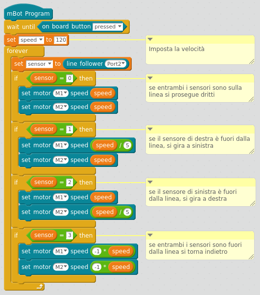
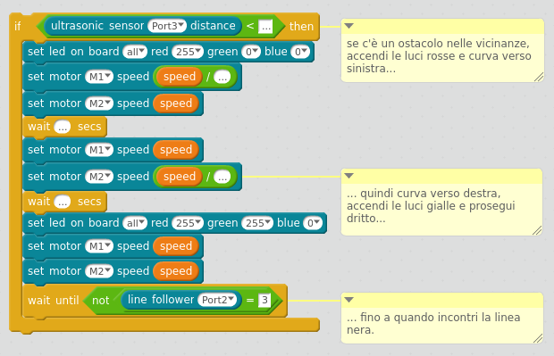
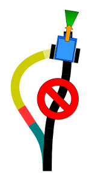
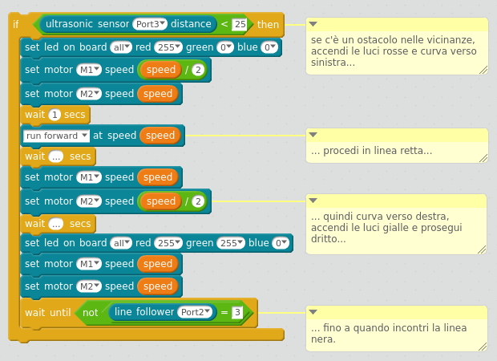
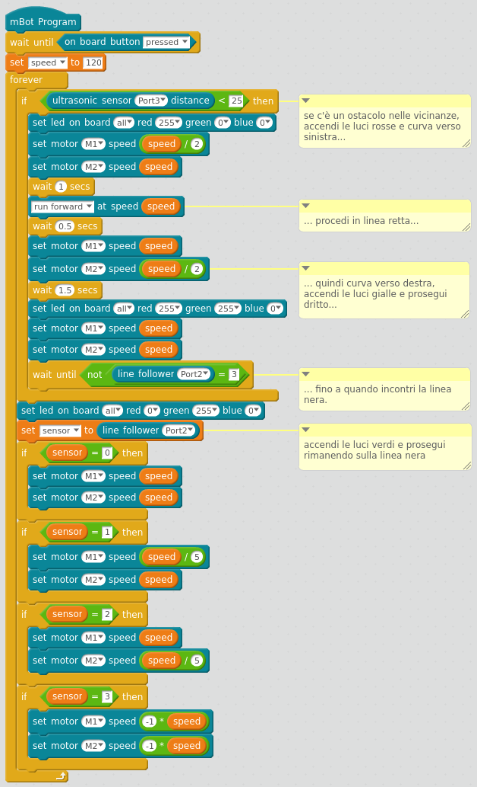

risorse | aggiramento di ostacoli con mbot
L'idea alla base di questa esperienza è quella di integrare le due modalità di movimento autonomo che caratterizzano il programma di base di mBot: inseguire una linea aggirando gli ostacoli che si incontrano durante la marcia. Entrambe le strategie sono già state affrontate in Studio del firmware di mBot separatamente, qui però si vuole fonderle assieme.
Normalmente il robot esegue il programma “segui la linea”, verificando periodicamente lo stato del sensore ultrasonico. Non appena questo rileva la presenza di un oggetto in traiettoria il robot commuta sul programma “aggira l'ostacolo”, costituito in linea di principio da quattro fasi:
Possibile strategia di aggiramento di un ostacolo
La figura schematizza il comportamento atteso del robot: inizialmente esso procede sulla linea con il sensore ultrasonico attivato; nel momento in cui percepisce la presenza di un oggetto estraneo devia a sinistra lungo una traiettoria curvilinea (in azzurro); aggira quindi l'ostacolo curvando a destra (in giallo); prosegue diritto nella speranza di incontrare nuovamente la linea guida; riprende infine a seguire la linea.
Il punto di partenza è il programma dell'inseguitore semplificato:
Il programma iniziale
A questo è stata aggiunta la procedura di aggiramento, la cui struttura è:
La procedura di aggiramento dell'ostacolo
Il programma fa uso dei led per indicare lo stato in cui si trova:
L'uso di questa tecnica ha permesso di velocizzare lo sviluppo del programma rendendo più semplice l'individuazione e l'eliminazione dei difetti.
Come stabilire le caratteristiche geometriche del percorso alternativo? Le considerazioni fatte in Analisi del moto di mBot dimostrano che non è possibile realizzare un programma che faccia percorrere al robot una traiettoria predefinita decisa a tavolino; per questa ragione si è deciso di procedere per tentativi.
I parametri in gioco sono molti: la velocità del robot, i raggi di curvatura delle svolte, la dimensione dell'ostacolo, la distanza alla quale inizia l'aggiramento, ecc. Per limitare il numero di parametri nella speranza di convergere il più rapidamente possibile verso un risultato accettabile, sono state fatte alcune scelte di comodo:
Il primo problema affrontato è stato quello di determinare la distanza minima ammissibile dall'ostacolo, entro la quale iniziare la deviazione verso sinistra; verificato che un valore inferiore a 15 centimetri porta al rischio di collisione anche adottando raggi di curvatura molto stretti per la successiva sterzata, si è optato per un valore di 25, che dovrebbe garantire i minimi margini di sicurezza.
Relativamente al raggio di curvatura del primo tratto di traiettoria, il rapporto tra le velocità dei due motori di 1:2 (cui corrisponde un raggio di curvatura pari a 34 centimetri circa) si è dimostrato da subito valido. Il tempo di sterzata è stato determinato per successive approssimazioni: verificato che mantenendo accesi i motori per 3 secondi il robot descrive un arco di circonferenza di oltre 180 gradi, si è deciso di ridurre il tempo di accensione a 1 secondo, ottenendo una deviazione di circa 60 gradi dalla linea guida.
Per la sterzata di rientro si è deciso di utilizzare lo stesso raggio di curvatura: a rigor di logica, mantenendo i motori accesi per il doppio del tempo della sterzata iniziale, il robot dovrebbe dirigersi verso la linea guida con un'angolazione prossima ai 60 gradi. Ciò effettivamente si verifica nella realtà, ma la deviazione così ottenuta non è sufficientemente lunga da evitare il contatto con l'ostacolo. Per ovviare a questo problema è stato introdotto un breve tratto rettilineo tra i due archi di circonferenza (evidenziato in rosso):
Il tratto rettilineo aggiunto tra le due curve
La procedura di aggiramento è stata modificata di conseguenza:
Sottraendo mezzo secondo alla sterzata di rientro ed assegnandolo al tratto rettilineo si giunge infine ad un risultato di tutto rispetto: il robot aggira sistematicamente l'ostacolo senza mai colpirlo, iniziando a deviare a 20/25 centimetri prima dello sbarramento, aggirandolo scostandosi di 9/10 centimetri dalla traiettoria originale per rientrarci dopo 25 centimetri circa.
Il programma completo
Il programma in azione
Scarica la versione completa del programma.
Le variabili in gioco sono molte ed è raccomandabile (suggerire di) applicare una strategia di esplorazione dello spazio dei parametri per non rischiare di girare a vuoto senza riuscire a raggiungere una soluzione accettabile.
Non è difficile pensare a situazioni in cui la strategia di aggiramento realizzata non funzioni a dovere: l'ostacolo è così basso da non essere rilevato dal sensore ultrasonico, oppure così largo da eccedere l'ampiezza della deviazione, ovvero è posto in corrispondenza di una stretta curva verso destra della linea guida, … Individuare queste casistiche, verificare il comportamento del robot, studiare delle possibili soluzioni, aggiornare il programma di conseguenza verificandone l'efficacia sul campo può essere un utile esercizio da proporre in un laboratorio.
Pagina modificata il 04/05/2018